Subsections
In this section we will present present
 -conforming vector-valued finite elements,
the Nédélec elements of first type (cf. [8]), which can be used to discretize the variational problem (3).
-conforming vector-valued finite elements,
the Nédélec elements of first type (cf. [8]), which can be used to discretize the variational problem (3).
In order to define a finite element we must specify
- the geometry
- We choose a reference element
 and a change of variables
and a change of variables
 , the element map.
We set
, the element map.
We set
 .
.
- a function space
- We need a finite dimensional function space
 , typically a space of polynomials, on the reference
cell, plus a transformation of to a function space
, typically a space of polynomials, on the reference
cell, plus a transformation of to a function space  on a general cell 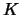.
on a general cell 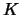.
- dofs
- We have to define a set of dofs
 . These are linear functionals on
and
. These are linear functionals on
and
 is the dimension of .
is the dimension of .
 should be unisolvent, that is, the dofs
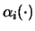
are linearly independent.
should be unisolvent, that is, the dofs
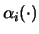
are linearly independent.
First, we observe that for a conforming discretization of (3) we cannot take vector-valued finite elements
that are build by taking the standard nodal finite element spaces of globally continuous functions for each vector component.
For
-functions, the only continuity condition is the continuity of the tangential component over cell boundaries.
This fact will motivate the choice of appropriate degrees of freedom (abbreviated by dofs in the following).
We will give an outline of the construction of the finite element spaces described by Nédélec in [8]. In literature, they are also referred to as
Nédélec's elements of first type.
In this section, we denote by the standard triangular or tetrahedral reference element.
In [8], Nédélec introduces the function spaces
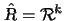, on which his finite element will be based. These spaces are subject to this
section.
For more details, consult [8].
We denote by
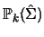 the space of polynomials of degree 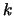 on
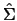, where
is an edge, a
face of or the reference element itself.. The space
 of homogeneous
polynomials of degree is the span of monomials of total degree in variables on .
of homogeneous
polynomials of degree is the span of monomials of total degree in variables on .
DEFINITION 3
We define the auxiliary space
 |
(4) |
with
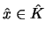.
The dimension of this space is in the case 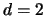 and 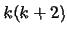 for 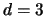.
Nédélec's first family of
-conforming finite elements is based on the polynomial spaces
DEFINITION 4
 |
(5) |
These spaces have dimension
In the two-dimensional case, an equivalent characterization of the space
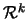 is
 |
(6) |
This can be seen by noting that for
obviously holds.
Moreover, the dimension of the space
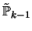 of homogeneous polynomials of degree 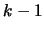 in two variables is and this is
also the dimension
 . This proves the stated equivalent representation of the space
.
. This proves the stated equivalent representation of the space
.
We illustrate these definitions with some examples. We start with the case and consider the spaces of polynomials of degree
 and 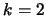:
and 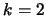:
EXAMPLE 1
 |
(7) |
To illustrate a case for , we consider the lowest polynomial degree :
EXAMPLE 2
We have to specify a basis for
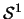:
Let
be a polynomial in

with componentwise representation
The condition for
being in
is
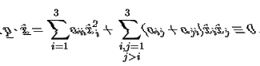
This leads to the condition on the coefficients of a polynomial in
:
With the basis of
which is obtained by choosing
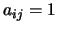, 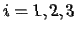, 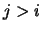 and setting all the other
coefficients to zero, we get
We remark at this point that the spaces
do not span the whole
 .
An
-conforming FEM based on full polynomial spaces, the so called
Nédélec elements of second type, was introduced in 1986 by Nédélec in [10].
.
An
-conforming FEM based on full polynomial spaces, the so called
Nédélec elements of second type, was introduced in 1986 by Nédélec in [10].
REMARK 3
The original, rather technical, representation of the spaces
is given in Definition 2 in [
8].
Nédélec uses this representation in most of his proofs. We will not refer to it here.
2.1.2 Degrees of freedom on the reference element
In this section we define the set
of dofs, which is a set of linear functionals on
.
REMARK 4
Recall that the dimension of the spaces of polynomials of degree in 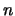 variables is
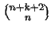.
DEFINITION 5
Let
be the reference triangle and
the tangent as defined in convention
1.
The set of degrees of freedom
on
in the 2d case consists of the linear functionals
- edge dofs
-
for every edge 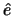 of . We have a total of 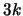 of edge dofs.
- inner dofs
-
We have a total of 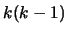 of inner dofs.
DEFINITION 6
Let
be the reference tetrahedron,
the tangent to an edge as defined in convention
1
and
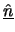 the outward unit normal vector to a face.
The set of degrees of freedom
on
in the 3d case consists of the linear functionals
- edge dofs
-
for every edge of the tetrahedron . We have a total of 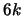 of edge dofs.
- face dofs
-
for every face of the tetrahedron . We have a total of 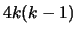 of face dofs.
- inner dofs
-
We have a total of
 of inner dofs.
of inner dofs.
We note that in the case of lowest order elements, i. e. , only edge dofs occur. This is not so for higher order elements. For
we additionally have inner dofs in the 2d case and face dofs in the 3d case. For  we have all types of dofs in both
cases.
we have all types of dofs in both
cases.
We also note that the total number of dofs equals the dimension of the spaces
, as it should be.
The representation of the interface dofs, that is edge dofs in 2d, edge and face dofs in 3d, is motivated by the continuity
condition on
-functions stated in proposition 1.
PROPOSITION 2
The set
of dofs befined above is unisolvent on
.
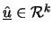 is uniquely defined by the moments

.
PROOF. See [8], proof of theorem 1 and preceeding lemmas.
EXAMPLE 3 (Reference shape functions of lowest order for Nédélec elements on triangular meshes)
Let the reference element be the triangle

.
Label the edges couterclockwise startung with
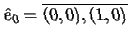.
The tangential vectors to the edges are (oriented counterclockwise)
The underlying function space for lowest order Nédélec elements on a triangular mesh is
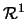 from (
![[*]](crossref.gif)
).
In the case of
only egde-dofs occur. On
we have dofs of the type

.
More precisely, since
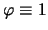 is a basis for
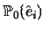 we have the three dofs
In order to construct a FE-basis

for
with respect to these dofs, we require

. This leads to a linear system for
the coefficients of the
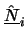 in a general basis of
. In the case of lowest order elements, it is easy to
verify that we have
 |
(8) |
2.1.3 Piola transformation
An affine triangle or tetrahedron is described by the affine element map
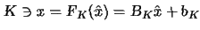
In standard
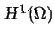-conforming FEM, the shape functions  on a general cell are obtained from the reference shape functions
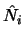 on the reference element by the pull-back
on a general cell are obtained from the reference shape functions
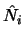 on the reference element by the pull-back
In the case of
-conforming Nédélec FEM we cannot transforme our shape function in this way. The pull-back of a
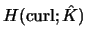-function needs not to be in
 . In addition, the pull-back is not an
-isomorphism and it
does not lead to an
-conforming method if prescribing the dofs by definitions 5 or .
. In addition, the pull-back is not an
-isomorphism and it
does not lead to an
-conforming method if prescribing the dofs by definitions 5 or .
In Nédélec's FEM (or, more general, in
-conforming FEM), the shape functions are transformed by the following covariant
transformation for vector-fields:
- The element shape functions
 on the element
are obtained
from the reference shape functions by
on the element
are obtained
from the reference shape functions by
 |
(9) |
where
 is the jacobian
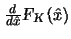 of the element map.
is the jacobian
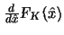 of the element map.
In literature, an equivalent to this transformation for
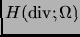-conforming FEM (which in that case is a contravariant map)
is referred to as Piola transformation, cf. [3] pp. 97.
Here, we will refer to the transformation (9) of the vector field also as Piola transformation.
We note that the gradients of scalar nodal
-conforming finite elements transform according to the Piola
transformation (9).
In the case of tetrahedral elements and affine element map
 , the jacobian
is just the constant matrix 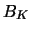 and we have
, the jacobian
is just the constant matrix 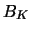 and we have
 |
(10) |
2.1.4 Transformation of the curl in 2d
For
 , we noted in remark 1 that vector fields in
can be represented as
rotated
vector fields.
Moreover, it is easy to verify that
, we noted in remark 1 that vector fields in
can be represented as
rotated
vector fields.
Moreover, it is easy to verify that
where  is the rotation matrix from remark 1.
Therefore, the properties of the Piola transformation (10) in the 2d case can be derived directly
from the properties
of the
-Piola transformation stated in [3] pp. 97.
is the rotation matrix from remark 1.
Therefore, the properties of the Piola transformation (10) in the 2d case can be derived directly
from the properties
of the
-Piola transformation stated in [3] pp. 97.
THEOREM 4 (Some properties of 2d Piola transformation for affine element map)
Let
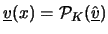,

,
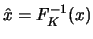, with affine element map

.
- (i)
- The gradient
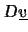 transforms according to
 |
(12) |
- (ii)
- The curl transforms according to
 |
(13) |
As a consequence we see that
is isomorphic to
under the Piola transformation
(10).
PROOF.
- (i)
- Chain rule
- (ii)
- We use that the 2d
operator is just the trace of the rotated jacobian 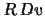. By remark 11,
we can replace 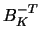 and we get that is affine-equivalent to
 ,
which proves (ii).
,
which proves (ii).
COROLLARY 1
From (ii) in theorem
4 we deduce
and we have, together with (ii) from theorem
4
2.1.5 Transformation of the curl in 3d
In three dimensions, we cannot identify the curl-operator with the rotated
gradient or with the divergence of a rotated vector field. We cannot, as in 2d, derive a transformation formula for the curl from the
transformatin formula of the divergence.
By the chain rule, we obtain the transformation of the gradient of a vector field
, defined by the Piola transformation () of a reference field
:
|
(14) |
We introduce the skew symmetric matrix
as
 |
(15) |
We see that
 and therefore by (14)
and therefore by (14)
 |
(16) |
PROPOSITION 3 (Transformation of the curl in 3d)
Let
be the reference tetrahedron and
an affine image of it.
The curl of a vector field

on , defined by the Piola transformation of a reference field

transforms according to
 |
(17) |
We obtain the matrix
by replacing i-th column of the (constant) jacobian
by the vector

:
(Note: an alternative, equivalent, transformation formula for the curl in 3d is given in proposition
4).
PROOF.
It holds
 |
(18) |
We demonstrate the statement of the proposition for the first component of the curl, which is
 .
Using the transformation (16), implicit summation over equal indices and the
abbreviation
, we have
.
Using the transformation (16), implicit summation over equal indices and the
abbreviation
, we have
Writing this out and recalling that
is skew symmetric, yields
and with (18) this is equal to the determinant of
The proof for the other components follows analogously.
In the next proposition, we state an alternative, equivalent, formula for the transformation of the curl
(e. g. used by Demkovicz in [12])
PROPOSITION 4
For a vector field
on the tetrahedron
, defined by the Piola transformation (
10) of a reference
field
on
, we have
 |
(19) |
PROOF.
The transformation formula (19) can be proven componentwise, and
we will only carry out the proof for the first vector component
. The proofs for the other components
follow analogously.
The identity (19) reads for the first vector component
 |
(20) |
Referring to (17), we show that the right hand side of (20) equals
 .
For this, we expand
to
where
is the
-matrix arising from when cancelling its i-th row and its j-th column.
.
For this, we expand
to
where
is the
-matrix arising from when cancelling its i-th row and its j-th column.
We recall the formula for the inverse of a matrix
 |
(21) |
where
is the
-matrix arising from when cancelling its i-th row and its j-th column.
Replacing in the right hand side of (19) by the expression (21)
for
 , we get
, we get
2.2 Nédélec Elements on affine quadrilateral or hexahedral grids
We want to present the ingredients for Nédélec's finite elements of first type on
grids consisiting of parallelograms (in 2d) or the respective objects in 3d, so called parallelotops (cf. section
FE built on cubes in [8]). Such grids consist
of elements that are affine images of the square or cubic reference element
:
In order to introduce the function spaces needed for the construction of Nédélec's finite elements,
let us define some spaces of vector-valued polynomials
DEFINITION 7
are the spaces of polynomials on the reference square with maximal degree in and
in .
are the spaces of polynomials on the reference cube with maximal degree
in , in and in .
The spaces for the reference shape functions now are in 2d
 |
(22) |
and in 3d
We renounce an example, since it is quite evident, what these spaces look like for a specific .
2.2.2 Degrees of freedom on the reference element
We start with the degrees of freedoms on the reference square
:
DEFINITION 8
Let denote the reference square and
the tangent as defined in convention
1.
The set of degrees of freedom
on
in the 2d case consists of the linear functionals
- edge dofs
-
for every edge of . We have a total of of edge dofs.
- inner dofs
-
We have a total of of inner dofs.
DEFINITION 9
Let denote the reference cube,
the tangent to an edge as defined in convention
1
and
the outward unit normal vector to a face.
The set of degrees of freedom
on
in the 3d case consists of the linear functionals
- edge dofs
-
for every edge of . We have a total of of edge dofs.
- face dofs
-
for every face of . We have a total of
of face dofs.
- inner dofs
-
We have a total of of inner dofs.
EXAMPLE 4
Proceeding the same way as in example
3 for a triangular reference element, we obtain
the reference shape functions of lowest
order on the square . For the unit tangents as in convention
1
they read
 |
(24) |
Since the elements of the considered grids are still affine images of the reference element, we can use the Piola transformation
(10) to transform vector fields and the results stated in sections
2.1.3 - 2.1.5 can be carried over one to one.
We now want to consider grids that are composed of elements that are a bi- resp. trilinear images
of the reference
element
.
The main difference here is, that the jacobian
of the element map  is not
constant, and we have to use Piola transformation (9) to
transform vector fields.
is not
constant, and we have to use Piola transformation (9) to
transform vector fields.
The polynomial spaces
and the dofs remain the same as in the case of affine quadrilateral elements.
A transformed vector field on a general element is now defined by the Piola transformation (9)
of a vector field on the reference element. Note that
the jacobian
is not constant in this case. In contrast to the case of affine elements, the gradient
does not transform according to
formula (12). Non-vanishing second derivatives of
appear in the transformation rule
for gradients of vector fields.
This requires a new approach to express
 in terms of
in terms of
 .
Nevertheless, it can be shown that the curl of a vector field transforms analogously to the case of affine elements.
.
Nevertheless, it can be shown that the curl of a vector field transforms analogously to the case of affine elements.
PROPOSITION 5
Let be the reference element and a bilinear image of . If the vector field
transforms according to the Piola transformation (
9), then the transformation of the curl obeys
as in the affine case.
PROOF.
In this proof, the mapped element will be fixed, so for simplicity we write  for .
for .
First note that
 . We use the notation
. We use the notation
 and imlicit summation to rewrite the Piola transformation of the vector field componentwise
and imlicit summation to rewrite the Piola transformation of the vector field componentwise
In the case of affine elements, i. e. for constant jacobian, we have
whereas for non-constant jacobian we have
We see that in both cases we have
that is, the second derivatives cancel out in the expression for the curl and the curl in the non-affine case transforms equally
to the curl in the affine case.
The polynomial spaces
and the dofs remain the same as in the case of affine hexahedral elements.
The
vector field on a genereal element is defined by the Piola transformation (9).
The problem of the non-vanishing second derivatives of the jacobian
 arises again, and we cannot generalize the results
from the affine case straight away.
arises again, and we cannot generalize the results
from the affine case straight away.
But analogously to the 2d case, one can check that in in the transformation rule for expressions
 ,
,
 ,
which define the curl-operator, the terms containing second derivatives vanish. We have therefore again the transformation rule
(16) for the skew matrix
,
which define the curl-operator, the terms containing second derivatives vanish. We have therefore again the transformation rule
(16) for the skew matrix
 :
:
It follows that the following proposition can be proved analogously to the case of affine elements (replace there by
 ).
).
PROPOSITION 6
Let the vector field
on a trilinear image

be defined by the Piola transformation of a
reference field
on . The transformation formula for the curl then reads
In the previous sections we have introduced function spaces and degrees of freedom, which, together with the Piola transformation,
will allow us to define an
-conforming finite element method.
Indeed, in [8], Nédélec shows the invariance of the spaces
and
under Piola transformation of the vector field, as well as the unisolvence of the set of
degrees of freedom
from sections 2.1.2 and 2.2.2
(for details, see [8], Section 1.2, Theorem 1 and Section 2, Theorem 5).
This leads to the fact that
-conforming global shape functions can be defined by mapping elementwise the reference
shape functions with the Piola transformation
.
However, we must pay some care to the orientation of an interface on which the moments defining the degrees of freedom are based.
For the 2d case, we will illustrate in this section how we must take into account the orientation of an edge
in the definition of the respective element edge shape function, in order to get an
-conforming finite element space
of global shape functions.
Let
 be an affine or bilinear image of a reference element, one of its edges and the
corresponding edge on the reference element.
be an affine or bilinear image of a reference element, one of its edges and the
corresponding edge on the reference element.
Let further
![$ [0,\vert e\vert] \ni s \mapsto \underline x(s) \in e$](img267.gif) and
and
![$ [0,\vert\hat{e}\vert] \ni \hat{s} \mapsto \hat{\underline x}(\hat{s}) \in \hat{e}$](img268.gif) be parametrizations
with respect to the arc length of and respectively. We can assume that these parametrizations endow the edges with a
counterclockwise orientation. Then, the unit tangent vectors
and
are given by
and
.
be parametrizations
with respect to the arc length of and respectively. We can assume that these parametrizations endow the edges with a
counterclockwise orientation. Then, the unit tangent vectors
and
are given by
and
.
LEMMA 1
Let
be a vector field on the reference element and
be the corresponding vector field on , defined by the
Piola transformation (
9). It then holds
 |
(25) |
where

and

denote the length of the edges and .
PROOF.
With
and
and
on the edges, we have
and with
 the lemma follows.
the lemma follows.
As a consequence, we have
PROPOSITION 7 (Invariance of the edge dofs)
Let the vector field
on be defined by the Piola transformation (
9) of a reference vector field
on
. Then, the functionals (
edge dofs)
![$ \alpha^{[K]}(\underline u) := \int_e (\underline v\cdot \underline t)\varphi \,ds$](img279.gif)
are invariant in the sense of
Let now
and
be two neighbouring triangles with common edge . Let
be the global edge shape
function that 'lives' on . By
and
 we denote the restriction of
to
we denote the restriction of
to  and
and  respectively.
Let
respectively.
Let
 and
.
We write
for the tangential unit vector to , oriented
counterclockwise with respect to and
for the respective from . For line integrals over the edge we write
if we chose the orientation induced by
and
for the orientation of induced by
.
and
.
We write
for the tangential unit vector to , oriented
counterclockwise with respect to and
for the respective from . For line integrals over the edge we write
if we chose the orientation induced by
and
for the orientation of induced by
.
In order to obtain an
-conforming method, proposition 1 tells us that we must ensure the continuity of the
tangential components of the global shape functions, that is
The following lemma will justify the choice of the moments describing the edge dofs. A consequence of the lemma will be,
that the matching of the local edge dofs
![$ \alpha^{[K_+]}$](img294.gif) and
and
![$ \alpha^{[K_-]}$](img295.gif) guarantees
the pointwise condition (26).
guarantees
the pointwise condition (26).
LEMMA 2
Let
denote the reference triangle and one of its edges, parametrized by

.
Let
,
as defined in (
4). It then holds
PROOF.
Hence, with the parametrization of by
with
 ,
and
,
and
We observe that the coefficient of is exactly
. By the definition of the space
, this expression must vanish.
REMARK 5
In the case of
being a quadrilateral, we have
. By the definition of
we see
immediately that here also

.
The next proposition tells us how exactly to define element shape functions on a mapped element in order to get
-conforming global shape functions.
PROPOSITION 8
Condition (
26) is satiesfied, if we define the element shape functions
and
by the Piola transformation (
10) and take into account the orientation of the edge :
 |
(27) |
PROOF.
Let be the reference element and its affine or bilinear image.
Let
 be a vector field on , defined by the Piola transformation of a reference vector field
be a vector field on , defined by the Piola transformation of a reference vector field
 . Let be one of the edges of and
the tangent according to convention 1.
. Let be one of the edges of and
the tangent according to convention 1.
In the case of being a triangle, we have
.
By the definition of the space
, lemma 2 and 1 we can
conclude that
.
If is a quadrilateral, the previous remark and
1 also tell us that
.
Hence the condition
on the edge moments
is sufficient for the global edge shape functions to satiesfy (26).
Note that
 .
So, by the definition (27) of the element shape functions on resp. on ,
by the invariance of the dofs (proposition 7) and by the definition of the
reference shape functions (example 3) we have
.
So, by the definition (27) of the element shape functions on resp. on ,
by the invariance of the dofs (proposition 7) and by the definition of the
reference shape functions (example 3) we have
To close this section, let us make a note on the interpretation of the dofs on an element in the case of lowest order polynomial
degree. In this case, all dofs are edge dofs, the degrees of freedom are
 and the tangential traces of shape functions are constant on each edge.
Since we require
and the tangential traces of shape functions are constant on each edge.
Since we require
 for the reference shape functions, we have
for the reference shape functions, we have
where for the last equality we have used lemma 1. We see that
the dof
'sitting' on the edge is the value of the scaled tangential component
 .
.
REMARK 6
For the invariance of the edge dofs it is essential that the moments
on are defined by using the
unit tangent
vector
on . If not, e. g. if we
just used the tangent
, we would lose the invariance of the dofs. In that case the dofs would
scale by a factor depending on the size of the edge or face ([
8], remark on p. 326).
Without going into details, we will cite here some results on approximation properties and convergence of Nédélec FEM of first type.
We are in the setting of a
conforming FEM and have quasi-optimal approximation properties of the FE-spaces
where
or
respectively,
denotes the interpolate of
with regard to the Nédélec dofs:
for all dofs .
The interpolation operator is defined for sufficiently smooth vector fields, namely for all
for any
(see [1], Lemma 5.1., [7] and references therein).
For Nédélec's FEM of first type we state (without proof) the following optimal estimate in the curl-norm:
THEOREM 5
If
, , is a regular family of triangulations on

and
, then there exists a constant ,
depending on but not on or
, such that
for all
.
The result in (28) was obtained by Alonso and Valli in [1], extending earlier interpolation
results by Nédélec in [8] and Monk in [6].
Optimal convergence in the
-norm for the error of the FE-approximation of the model
problem (3) by Nédélec's elements of first type follows from (28) by Céa's lemma.
This result has been verified in numerical experiments with a MATLAB code, which uses lowest
order Nédélec elements on affine triangular meshes for 2d problems, as well as with a deal.II code, which uses lowest order
Nédélec elements on bilinear resp. trilinear meshes for 2d resp. 3d problems.
As for the
 -approximation properties of FE spaces based on
or
, we could hope for a better order
than
at first sight: still, we have
-approximation properties of FE spaces based on
or
, we could hope for a better order
than
at first sight: still, we have
![$ [\mathbb{P}^{k-1}(K)]^d \subseteq \mathcal{R}^k(K)$](img341.gif) . However, Nédélec shows in [8]
that only suboptimality can be expected:
. However, Nédélec shows in [8]
that only suboptimality can be expected:
 |
(29) |
Nédélec uses a standard scaling and Bramble-Hilbert argument to derive (29). Since
, the Bramble-Hilbert argument only guarantees an elementwise
approximation of order of -functions from the space
 .
.
However, in a recent paper Hiptmair uses a duality technique to state optimal convergence of the
-error
for the 3d case and Nédélec's elements of first type of order on tetrahedral meshes
(see Section 5.3, Theorem 5.8 in [5]):
THEOREM 6
There is an
such that
 |
(30) |
Under the assumption that the boundary
is smooth or convex, can be chosen.
Several key arguments of the proof in [5] make explicitely use of features that are limited to 3d problems and the
family of finite elements based on tetrahedrons.
They cannot be modified trivially to apply to 2d problems or 3d problems on hexahedral meshes. Even worse, it is suggested by the results of
numerical experiments that one cannot hope to obtain a result similar to (30).
A possibility to overcome this deficiency of convergence is to use Nédélec elements of second type, where the full
are used as polynomial spaces (see [10]).
2003-04-30


![$\displaystyle \alpha^{[K]}(\underline u) = \int_e (\underline v\cdot \underline...
...{e})\,, \quad \varphi = \hat{\varphi } \circ F^{-1} \in \mathbb{P}_{k-1}(e)\,.
$](img280.gif)